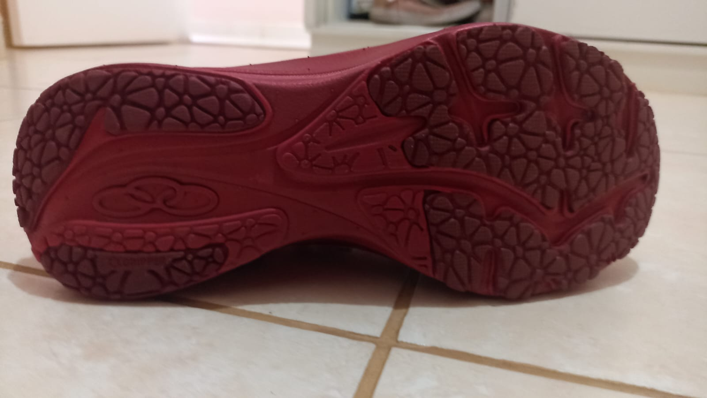
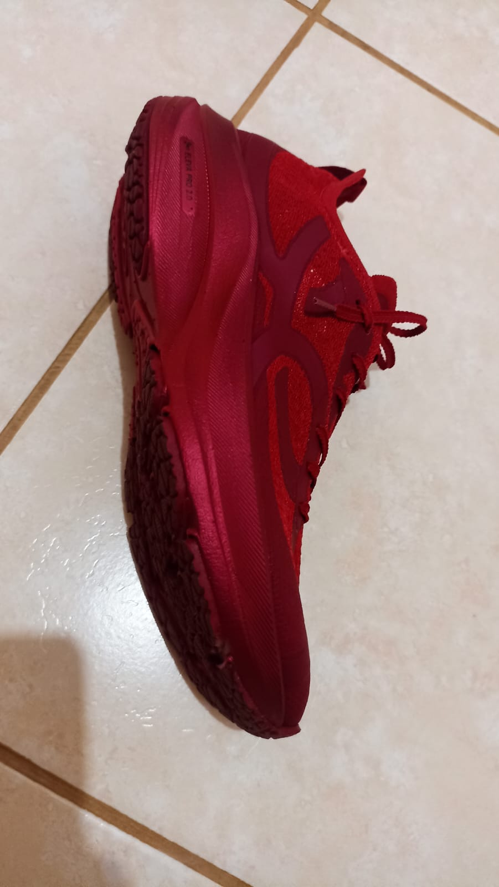

Bem-vindo ao demonstrador 3D do Olympikus Corre 4. Este sistema utiliza um modelo 3D genérico por padrão. Para que o tênis fique verdadeiramente idêntico ao seu produto, substitua o arquivo models/corre-4-estilo-vermelho.glb por um modelo GLB oficial ou escaneado do Corre 4.

